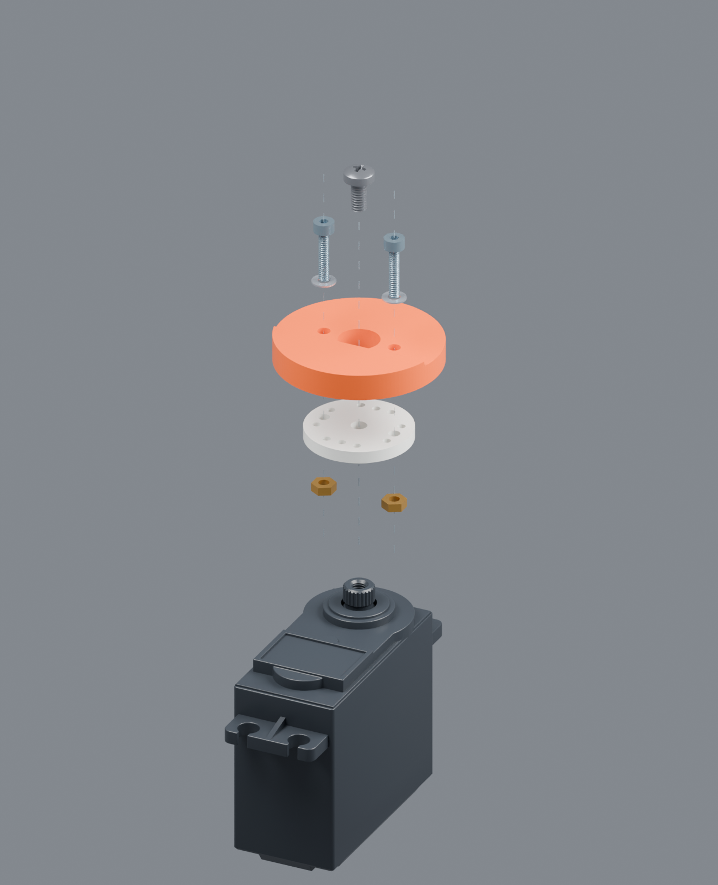
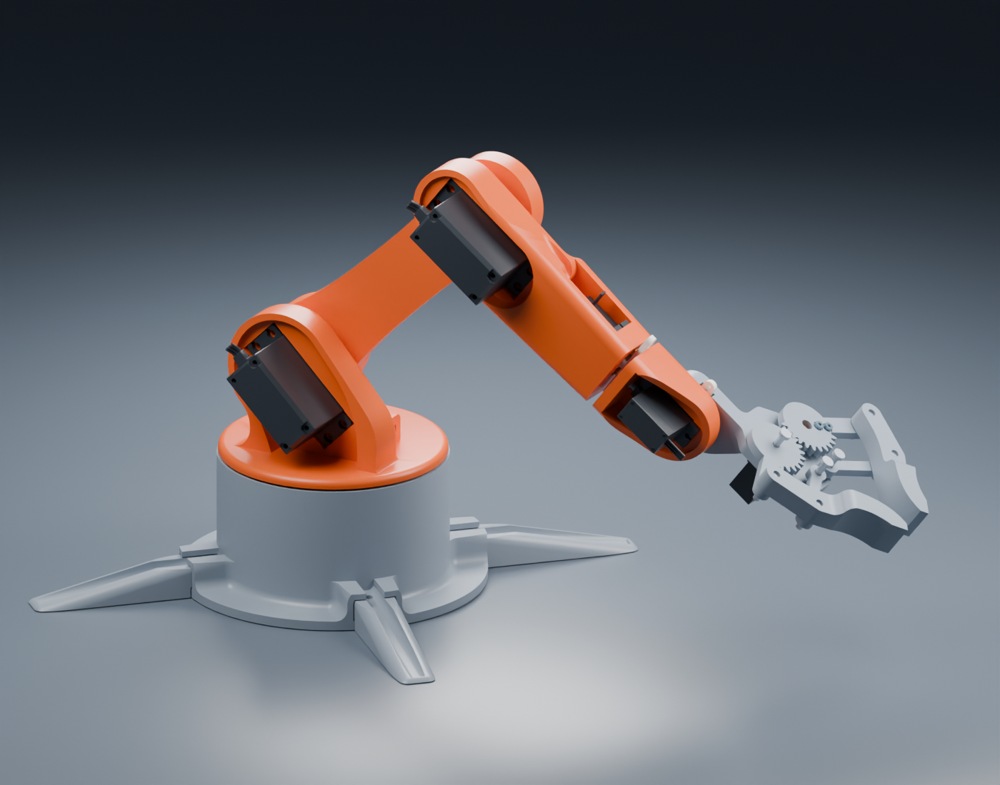
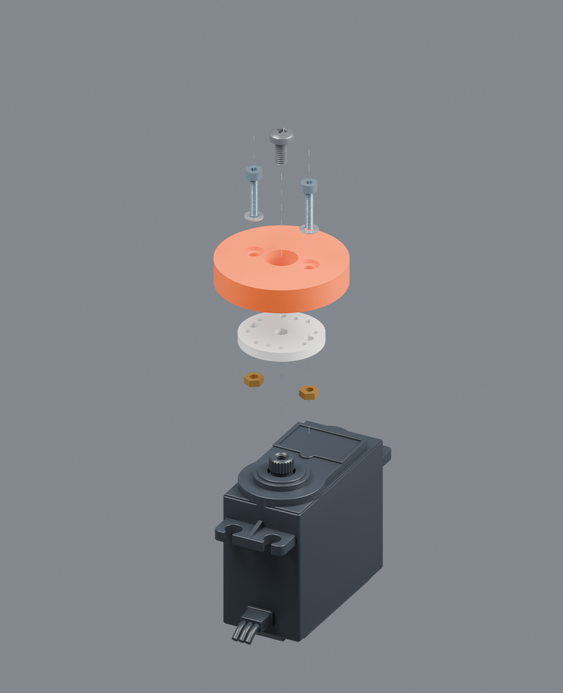
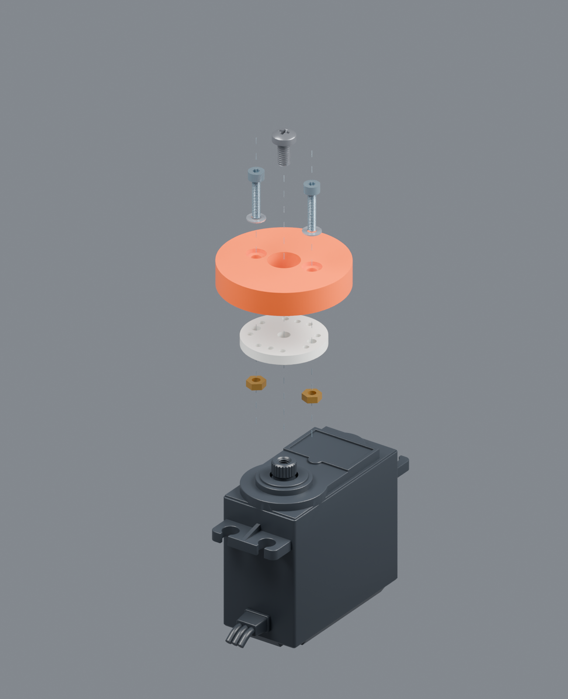
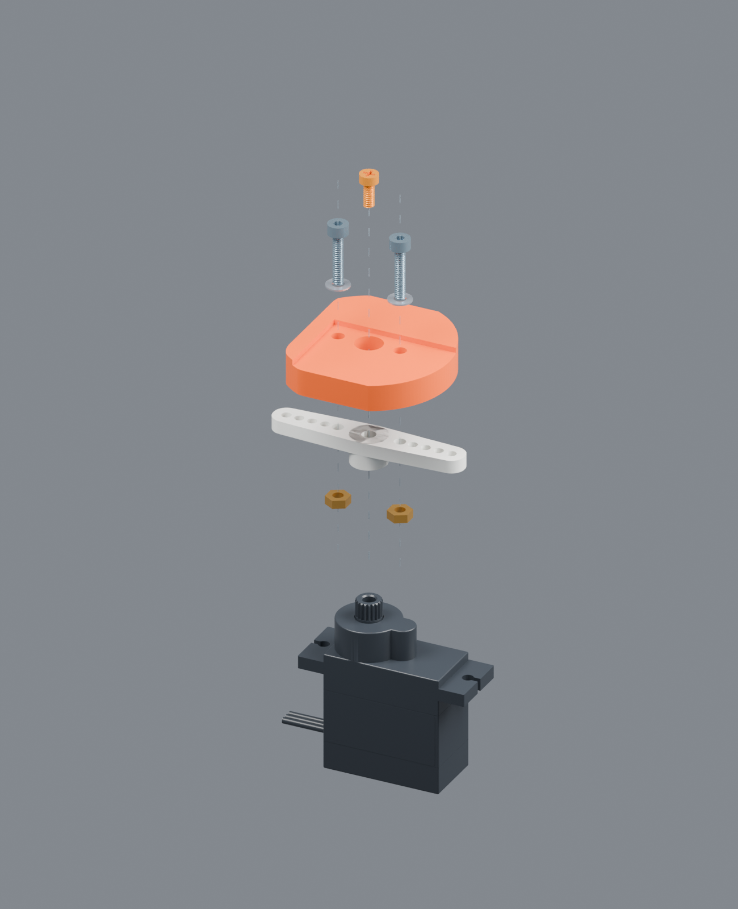
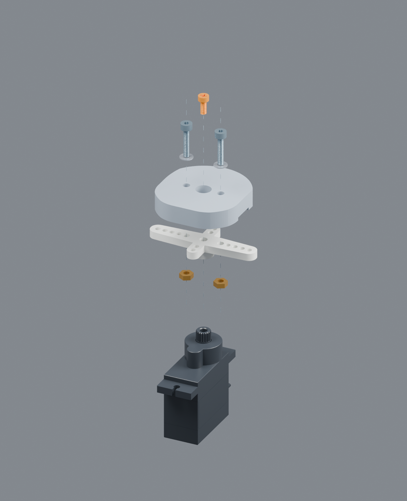
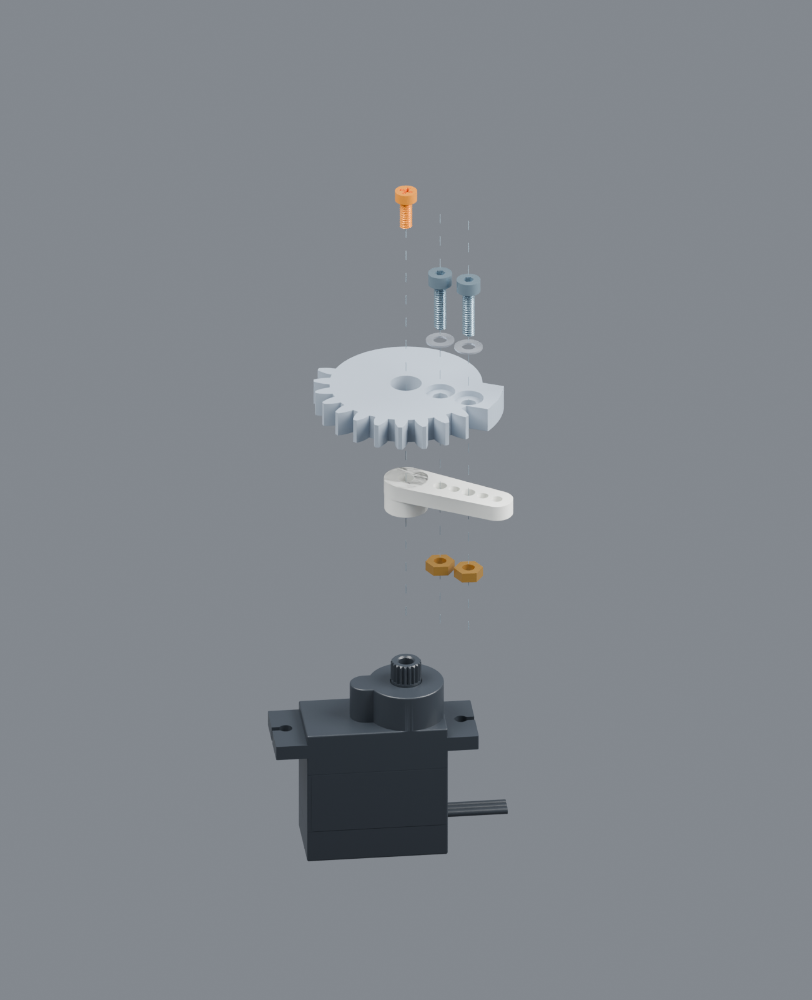

S01 · BASE YAW
MG996R 圆盘 → Waist
2 × M2×10；14 孔距；Ø7.7 中心通道。增加 0.5 高一体承压垫台。
标称螺栓尾端超出螺母 1.3。六处传动接口，十二套 M2 螺栓、垫片与螺母。中心原厂短螺丝负责锁住舵盘，周边两颗螺栓负责夹紧打印件。
保留参考外形与无 Logo 表面；实际通孔、沉孔和背面避让均已修改到打印网格中。

| 位置 | 舵盘 / 选孔 | 连接零件 | 每处螺栓 | 外侧沉孔 | 中心检修孔 |
|---|---|---|---|---|---|
| S01 底座 | MG996R 圆盘 · 14 孔距 | Waist | 2 × M2×10 | 无 | Ø7.7 |
| S02 肩 | MG996R 圆盘 · 14 孔距 | Arm_01 肩端 | 2 × M2×10 | Ø4.8 × 深 1 | Ø7.7 |
| S03 肘 | MG996R 圆盘 · 14 孔距 | Arm_01 肘端 | 2 × M2×10 | Ø4.8 × 深 1 | Ø7.7 |
| S04 腕旋转 | MG90S 双臂 · 12 孔距 | Arm_03 | 2 × M2×10 | 无 | Ø5.2 |
| S05 腕俯仰 | MG90S 十字长臂 · 12 孔距 | Gripper_base | 2 × M2×10 | 无 | Ø5.2 |
| S06 夹爪 | MG90S 单臂 · 轴心半径 6、11 | gear2 | 2 × M2×8 | Ø4.8 × 深 1 | Ø5.0 |
单位 mm。全部传动通孔 Ø2.4；每处两片 ID2.2 / OD4.5 / 厚0.3 小垫片和两颗对边4 / 厚1.6 的 M2 螺母。沉孔为局部让位，不是全埋头。
顶部中心短螺丝原厂中心锁紧件。穿过大检修孔，只压住舵盘。MG90S 橙色表示尺寸待实物确认。
两侧长螺栓 + 银色垫片由打印件外侧穿入。下方金色六角件表示螺母，颜色不是采购材质要求。
打印件局部 + 白色舵盘图中打印件截取了实际接口便于看孔，并非新增圆形整臂零件。虚线仅表示同轴装配关系。

2 × M2×10；14 孔距；Ø7.7 中心通道。增加 0.5 高一体承压垫台。
标称螺栓尾端超出螺母 1.3。
2 × M2×10；14 孔距；Ø4.8 × 深1 沉孔。增加 0.2 高一体承压垫台。
标称螺栓尾端超出螺母 0.6。
与肩端相同的螺栓、孔距和沉孔规格，接口位于同一大臂的另一端。
中心 M3×6 来自提供的 CAD，实物仍使用原厂件确认。
2 × M2×10；两侧半径6的小孔扩至 Ø2.2。邻接固定支架中心开口扩大至 Ø17.4。
MG90S 中心螺丝是待确认包络，继续用实物原厂短螺丝。
改用十字长臂上的 12 孔距两孔。短臂保留，但不使用旧版 10.2 孔距连接。
短臂孔过近，螺母会碰中心凸台；长臂位置也必须先离机试装。
2 × M2×8；同侧轴心半径6和11。固定夹爪座已做局部弧形螺母/尾端避让。
夹爪预览 ±8°，不是已认证的实物安全行程。螺母与中心凸台的 CAD 保守余量约 0.21–0.29，空间很紧。不要用中心螺丝硬拉花键，不要凭模型拧到底。试装片只验证接口，不验证整臂强度。